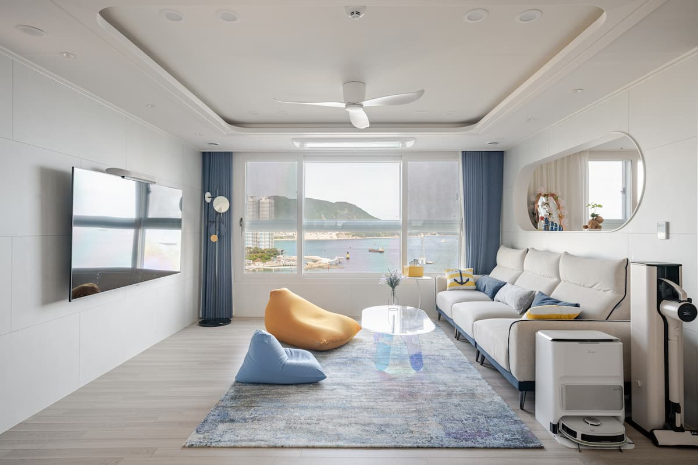
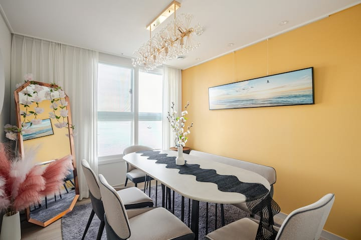
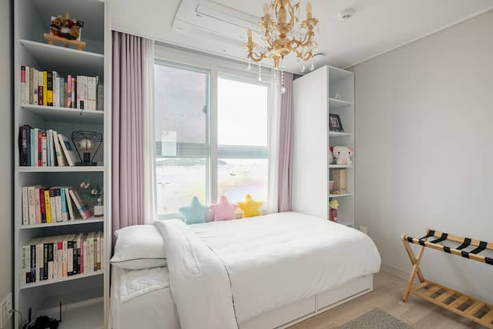

- Guests
- 8
- Bedrooms
- 3
- Beds
- 4
- Bathrooms
- 2
A HOME, NOT JUST A ROOM
Same company.A different shade of blue.
Wake up to a different shade of blue. Seaside Cloud pairs ocean views with three bedrooms and a dining space for the whole group, near Busan’s Songdo Beach.
This home is part of our Serenity Stay collection. We bring the practical comforts of home into your time in Korea: space to be together, a kitchen of your own, and an easy place to come back to.
Room for everyone.
Three bedrooms and four beds: one queen, one super-single and two super-single bunk sleeping surfaces. Two bathrooms and a shared dining area complete the home.

Photo tour
A closer look.
Take your time. Explore the rooms and the little details.

Good to have
Settle right in.
Confirm the full sleeping arrangements and house rules on Airbnb before booking.
- Ocean view
- Kitchen
- Washer & dryer
- Free parking
- Self check-in
If the map doesn't appear, explore the area using the Open NAVER Map link below.
This sample map shows the surrounding area, not the accommodation’s exact address. Confirm your arrival address through Airbnb.
Open NAVER MapOpens in a new tabNAVER map labels are displayed in English.
Busan / SONGDO · SEO-GU
A good place to begin.
Make Songdo your seaside base. According to the listing, Songdo Beach is about a five-minute walk away. Leave time for a slower afternoon by the sea.
Your exact address and arrival instructions are shared through your Airbnb reservation.
Official city guideOpens in a new tabBefore you arrive
Check your Airbnb reservation for confirmed arrival times, the exact address and check-in instructions.
YOUR NEXT CHAPTER
Make yourself at home.
Seaside Cloud · Busan
Check dates on AirbnbOpens in a new tabPrices, availability and house rules are confirmed on Airbnb. Opens in a new tab.
All stays